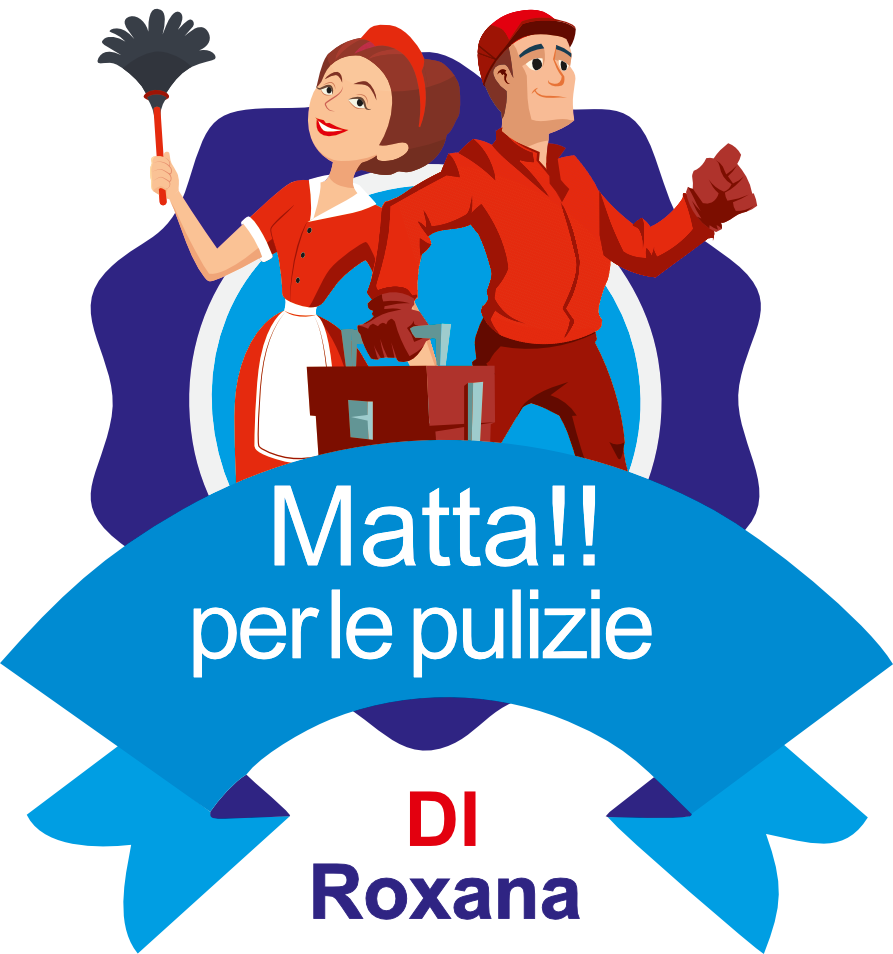
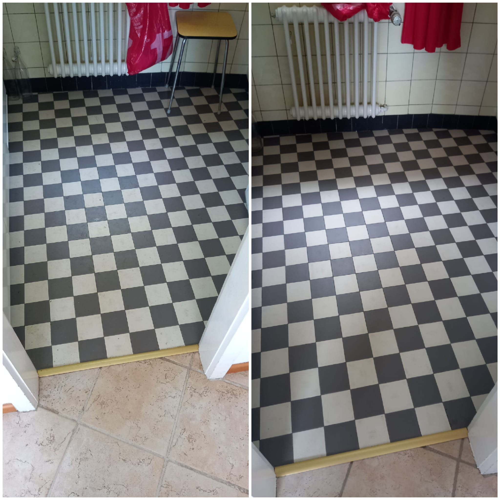
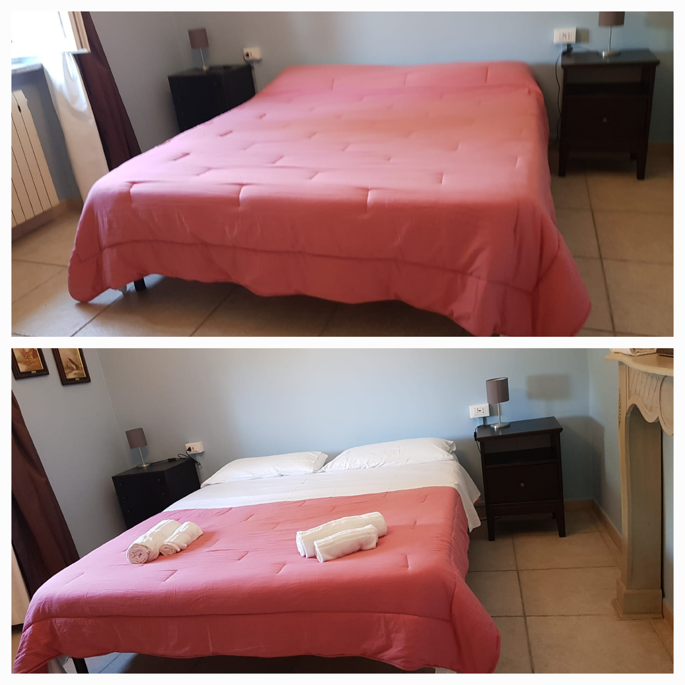
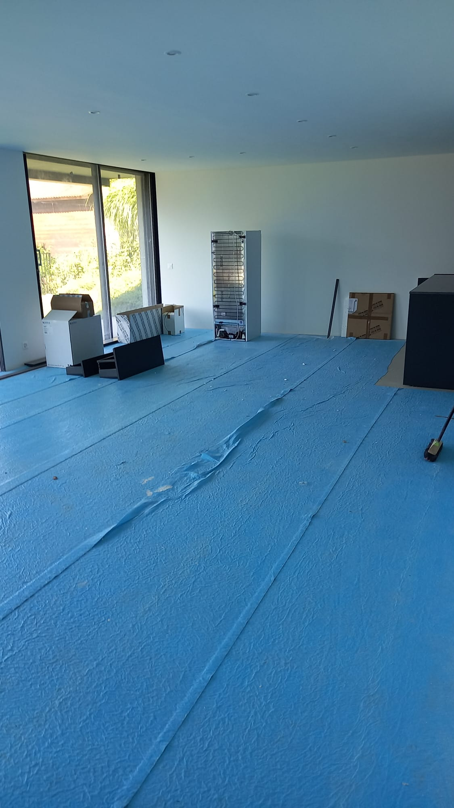
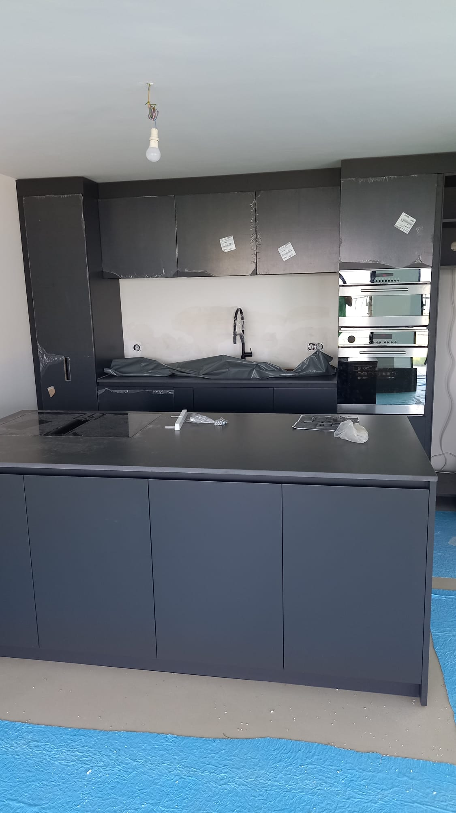
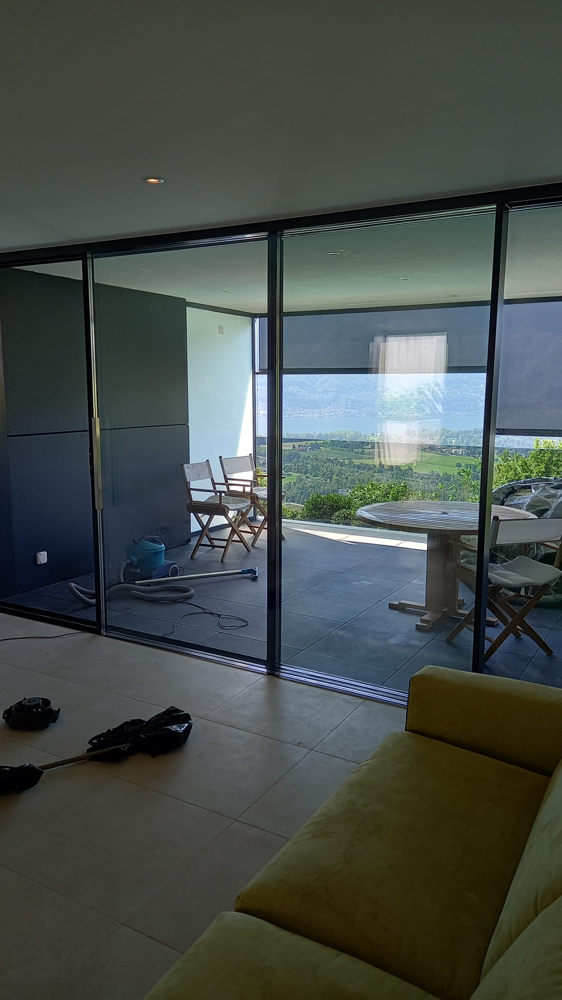

CONTATTACI
o scorri verso il basso per conoscerci meglio 😉
o scorri verso il basso per conoscerci meglio 😉
Svolgiamo la nostra attività con estrema professionalità al fine di garantire la qualità dei nostri servizi.

La nostra attività si rivolge a clientele diverse, ad esempio strutture alberghiere nelle quali oltre ad occuparci delle pulizie facciamo anche l'allestimento per i nuovi ospiti...

...o imprese alle quali offriamo il nostro servizio per la pulizia di fine cantiere, ...

...consegna appartamenti...

...e pulizia vetrate.

Lavoriamo inoltre per palestre, negozi, uffici e concessionarie.
Contiamo su un team di collaboratori esperti e qualificati che operano da anni nel settore ed utilizziamo prodotti di alta qualità.
Contatti:
Matta per le pulizie di Roxana-Mihaela Lincan
Via Ceresio 55 - 6963 Pregassona
Telefono: +41 077 906 95 18
Mail: mattaperlepulizie@gmail.com
Matta per le pulizie di Roxana-Mihaela Lincan
Via Ceresio 55 - 6963 Pregassona
Telefono: +41 077 906 95 18
Mail: mattaperlepulizie@gmail.com